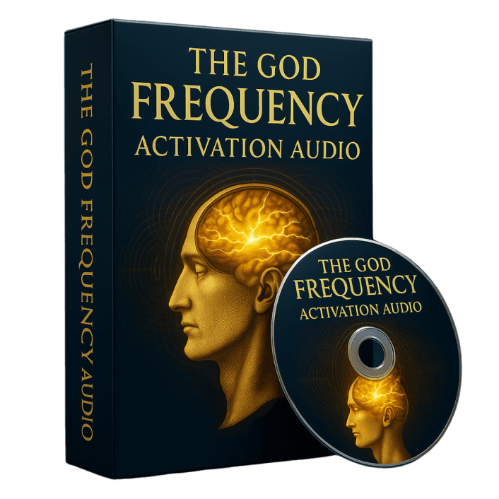

AI Website MakerThe Forbidden Secret™ Program is a fully digital personal development system created to help individuals explore new ways of thinking, improve mental focus, and develop a more opportunity-oriented mindset. Rather than relying on lengthy meditation practices or complicated routines, this program offers a simple, guided approach designed for everyday life.
At the heart of The Forbidden Secret is a series of short, guided audio sessions paired with structured mental exercises often referred to as “Reality Codes.” These tools are designed to encourage positive mental habits, improve clarity, and help users become more aware of their thoughts, goals, and daily decisions. The program focuses on mindset alignment, helping users stay focused, motivated, and mentally balanced.
The Forbidden Secret also includes easy-to-follow written guides and practical exercises that support confidence, self-awareness, and consistent personal growth. These materials are structured step by step, making the program accessible even for beginners with no prior experience in mindset or self-development programs.
Delivered entirely online, The Forbidden Secret™ can be accessed on any device, allowing users to start immediately and progress at their own pace. With regular use, the program aims to support clearer thinking, improved focus, and a more positive, goal-driven outlook—helping users feel more aligned with their personal and professional aspirations.
“Before using The Forbidden Secret, I often felt mentally drained and unfocused. After starting the program, I began to notice clearer thinking and a more positive mood within a short time. The audio sessions are simple to follow and fit easily into my day. I feel more balanced, more confident in my decisions, and less caught up in overthinking. It’s been a genuinely uplifting experience and has added clarity to my daily routine.”
“I went into The Forbidden Secret with low expectations, but it turned out to be surprisingly effective for me. Over the next couple of weeks, I felt more mentally organized and motivated, and everyday stress felt easier to manage. The program doesn’t take much time, which made it easy to stay consistent. It’s straightforward, practical, and helped me feel more focused than I had in a long time.”
“At one point, I felt disconnected from my focus and creativity. The Forbidden Secret helped me regain a sense of mental calm and direction. The sessions are simple and not overwhelming, yet I noticed improvements in my focus and overall mindset. I feel more grounded, energized, and like myself again. It fits naturally into my daily schedule and feels supportive rather than demanding.”
The Forbidden Secret™ is a digital personal development program designed to help users explore new ways of thinking, improve mental clarity, and develop a more focused and positive mindset. It is structured as a simple alternative to lengthy meditation or visualization practices.
The program centers around guided audio sessions combined with written instructions and structured mental exercises often referred to as Reality Codes. These elements are designed to encourage awareness, improve focus, and help users shift habitual thought patterns in a more intentional direction.
Rather than relying on complex routines, The Forbidden Secret focuses on simplicity and consistency. The program is designed to be easy to use, making it suitable for beginners as well as individuals who feel stuck with traditional self-development methods.
Enjoy the complete Forbidden Secret experience in audio format, so you can listen anytime, anywhere. This audiobook allows you to absorb the core teachings in a convenient and flexible way—whether you’re relaxing, commuting, or winding down at night. Many users find audio easier to engage with than text, making it a great option for reinforcing positive mindset patterns and staying consistent with the program.

This short 9-minute audio session is designed to help you enter a focused, calm, and mentally alert state. By listening regularly, users aim to improve clarity, concentration, and awareness. The audio can be played whenever it fits your schedule, making it easy to incorporate into daily life. It’s intended to support deeper focus and mental alignment without requiring long meditation sessions.
Receive a collection of 70+ Reality Codes—simple spoken scripts created to support intention-setting and mindset alignment. These codes are designed to be easy to use and more engaging than traditional affirmations. They cover areas such as wealth, confidence, personal growth, relationships, and success. With just a few minutes a day, users practice reinforcing positive thought patterns and clearer goal focus.
Supports mental alignment and focus, helping users notice positive mindset shifts and become more aware of new opportunities over time.
Encourages clearer thinking and better decision-making, allowing daily actions to feel more aligned with long-term personal goals.
Promotes relaxation and emotional balance, which may help reduce stress and support a more positive, consistent mindset.
Fully digital access to audio sessions, Reality Codes, and guides means you can start immediately on your phone, tablet, or computer.
Short, simple daily sessions require no prior experience and easily fit into busy schedules, making the program beginner-friendly.
Encourages consistency, confidence, and proactive habits that can support long-term personal growth and motivation.
The concept of a “quantum antenna” is not supported by mainstream scientific research, so expectations should remain realistic.
Results vary between individuals, and some users may experience slower or less noticeable changes, especially without consistency.
The program is entirely digital, which may not appeal to those who prefer physical products or in-person coaching.
Daily participation is important for best results; inconsistent use may limit the overall effectiveness of the program.
The Forbidden Secret is backed by a 100% satisfaction, 90-day money-back guarantee. Your purchase is completely risk-free.
If you try the program and feel it is not the right fit for you, simply request a refund within 90 days of your purchase, and your money will be returned—no complicated process and no pressure.
This guarantee allows you to explore the full digital program with confidence, knowing you have ample time to decide if it meets your expectations. Your satisfaction is the priority, and your investment is protected.
Many users report noticing small improvements in focus, clarity, and motivation within the first few days of consistent use. With daily practice using the audio activations and Reality Codes, some people begin to notice meaningful mindset shifts and positive changes in their outlook within 2 to 4 weeks. Results vary from person to person and depend on consistency.
Yes, The Forbidden Secret Program is designed to help reduce mental clutter and support clearer thinking. With regular use of the audio activations and Reality Codes, many users experience improved concentration, sharper focus, and better mental clarity in daily life.
While the program may support focus, clarity, and motivation through audio and mindset techniques, the concept of a “quantum antenna” attracting abundance is not supported by mainstream scientific evidence. The program should be approached as a self-development and mindset support tool, not as a scientifically proven system for guaranteed outcomes.
The program uses audio and brainwave-based techniques. Some individuals may experience mild effects such as dizziness, headaches, or light-headedness, especially if they are sensitive to sound frequencies. If you have epilepsy, neurological conditions, or are sensitive to audio stimulation, consult a medical professional before use.
The Forbidden Secret is intended for most healthy adults seeking to improve mindset and focus. However, it may not be suitable for individuals with epilepsy, certain neurological conditions, or those expecting guaranteed results. Always use the program responsibly and seek professional advice if unsure.
After purchasing The Forbidden Secret through the official website, you receive instant digital access. All materials—including audio tracks, the guidebook, and Reality Codes—are available through a private online dashboard and can be accessed on any device. Customer support is available if you need assistance.
Your privacy and security are our top priorities. All payments for The Forbidden Secret are processed through ClickBank’s trusted and encrypted payment system, a well-known leader in secure online transactions. Your personal and financial information is fully protected, so you can purchase with complete confidence.
According to the creators of The Forbidden Secret, every purchase is protected by a 90-day, 100% money-back guarantee.
If you are not satisfied with the program for any reason, or if it does not meet your expectations, you may request a full refund within 90 days of purchase—no questions asked. This ensures you can try the program completely risk-free.
AI Website Maker